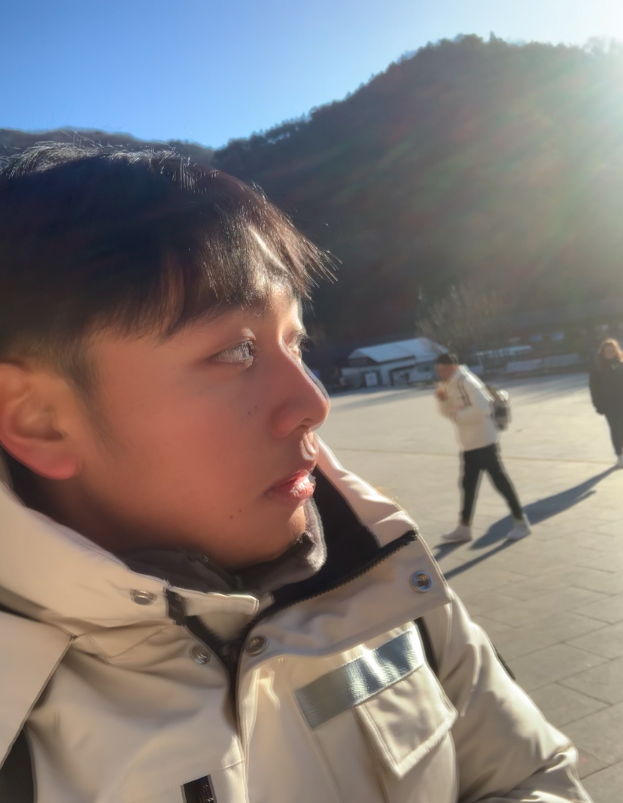
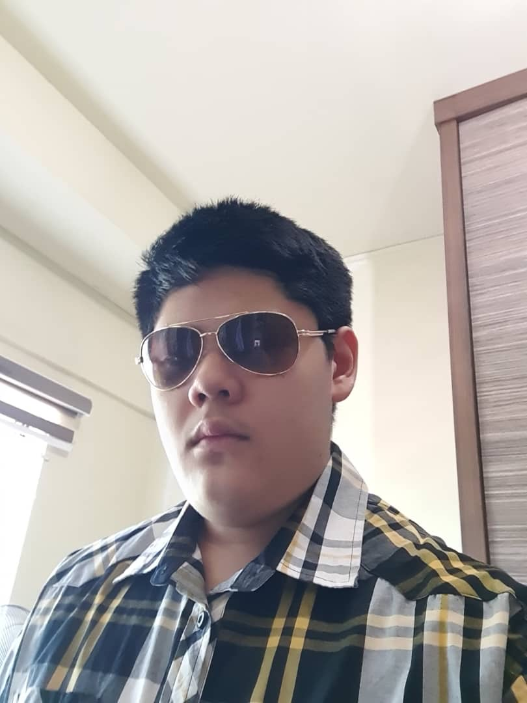
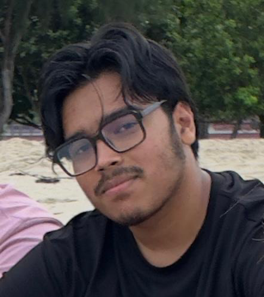

Self Reflection by Nazeer Mohamed Abdul Hameed
Corruption is one of the topmost obstacles to the development and progress of any society.
It undermines trust in institutions, weakens the rule of law, and steals coffers that could have been used for education, healthcare, and structure.
also, I see corruption not just as a political or legal issue, but as a moral failure.
It reflects a lack of integrity and responsibility among those who are entrusted with power.
Corruption exists in numerous forms — bribery, nepotism, embezzlement, and favoritism are just a many exemplification.
What troubles me most is that corruption frequently hurts the most vulnerable in society.
When public finances are misused, it's generally the poor and marginalized who suffer the most,as they calculate heavily on public services.
Corruption also discourages honest people from sharing in politics or public service, creating a cycle that's hard to break.
I believe that Anti-corruption sweats are absolutely essential for erecting a fair and just society.
These sweats should not only come from governments or watchdog associations, but also from ordinary citizens.
We must produce a culture of responsibility, where honesty is valued and corruption is n't permitted.
Laws and institutions play a big part, but so do education and communal mindfulness.
translucency, strong institutions, freedom of the press, and the active participation of citizens are some of the most effective tools in fighting corruption.
I also suppose that technology can be a important supporter.
Digital systems for payments, government services, and public records can reduce openings for corruption by making deals traceable and accessible.
Thank You.

Name:Christopher Ting Chi Guok
Student Id:00022792
Task:Group Leader/Video Editor
Role:Teacher
Self Reflection by Christopher Ting Chi Guok
At first, I thought learning about anti-corruption would be boring. I’ve never been the type of person
who’s interested in corruption cases in Malaysia or any other country.
However, after attending a few sessions of the anti-corruption course, I became curious and wanted to dive deeper to learn more.
I realized that corruption impacts every individual in one way or another.
Here’s why anti-corruption matters: it plays a vital role in promoting economic growth and development.
Without corruption, resources can be distributed more fairly, and public funds intended for schools, hospitals,
and infrastructure won't be stolen or misused.
Additionally, completing my case study on anti-corruption motivated me to research specific cases
and start reading the news more regularly—something I had never done before.
This experience helped me develop a deeper understanding of real-world corruption issues.
The Public Service Announcement (PSA) video my team and I created reflects the violation of core values such as fairness, integrity, and justice.
For example, using money to bribe for better grades in school undermines ethical standards.
Bribery doesn't just happen in schools—it can occur anywhere, often in subtle and less obvious ways, but it remains unethical and illegal.
As the group leader for this course, I would like to extend my heartfelt thanks to all my group members—Leo, Hero, Abdul, Richard, and Shahriar.
They have been extremely cooperative and supportive since the beginning, and I truly appreciate their commitment and teamwork.

Name:Leonard Voon
Student Id:00022704
Task:Director of the video
Role:Grab Driver
Self Reflection by Leonard Voon
Taking part in this anti-corruption subject has taught me a lot about the way corruption works in society and its consequences.
As a Malaysian, its unfortunately not uncommon to find corruption cases during my school days and I always assumed that its just a “get out of jail free” card.
After much exploration of the topic with lectures and friends, especially with the short video that we have shot, it has widened my view on the matter.
Corruption doesn’t only happen in large companies or even political backgrounds, even within school grounds or between friends- we often find our integrity tested by those around us.
This project has allowed me to have a deeper understanding of the cause and effect of corruption,
particularly when all of us sit down to discuss about the recent corruption cases in both local and international grounds.
It makes me realize how often corruption happens and the serious consequences that it has not only to the individual, but the society as a whole.
As the main director and videographer of the group, we faced many challenges with location changes and the unbearably hot temperature while filming.
The constant change in scrips as it was planned overnight and the uneven work load on the group leader as well as I in planning the shoot also needs to be addressed.
Overall, I am proud of everyone as with their efforts, we were able to finish all the filming within hours, thus not delaying the project.
It has taught me the importance of workload distribution as well as helping others with their language skills.
Name:Richard Koay Wee Khay
Student Id:00022837
Task:Scriptwriter/Ideas Contribution
Role:Student
Self Reflection by Richard Koay Wee Khay
Corruption is a complex issue that undermines societies internally. It manifests itself in many various ways, bribery, cronyism, abuse of power,
and while it may evoke visions of political scandals or corporate corruption scandals,
the reality is that corruption can be a day-to-day occurrence, starting with tiny, ostensibly innocuous choices.
Reflecting on this has attuned me to how even moderately untruthful choices can contribute to a culture of corruption.
I always thought that corruption was something distant from my own life—something only top-ranking officials or influential people were guilty of.
But the longer I live, the more I see it can occur in schools, offices, and neighborhoods, too.
Like when a person steals credit for someone's work, using connections to get an unfair leg up,
or covering up misdeeds, these are all forms of corruption in their own right.
This exercise has made me reflect on my own behavior. Now, I understand that fighting corruption is not something that happens with laws and enforcement,
but rather it starts with people. By all of us committing to act honestly, fairly, and with accountability,
we contribute to building a better, more moral society.
This break has made me more mindful of my actions and more willing to stand up if I witness injustice.
By holding myself to a standard of better behavior,
I also hope to be a good example to others and part of the solution, rather than part of the problem.
Name:Wee Jing Shyong
Student Id:00022948
Task:Ideas Contribution
Role:Main Character
Self Reflection by Wee Jing Shyong
About corruption, I have only heard from national politics. I personally rarely research the news about corruption, so I don’t know much about this topic.
Even in my life, I also rarely discuss a topic about corruption with my family and friends. However, after I‘m learning this course at university,
I’ve started to understand and research corruption on the internet. In my understanding, I think corruption is the conduct that reflects a moral failure of an individual,
and it also shows a breakdown of values in honesty, accountability, and justice. This behavior is very inappropriate and disgusting to me.
I have read some news from the internet and newspapers, which shows that some national leaders put personal gain above public service.
For example, the national leader uses state property for personal and living purposes and does not care about the interests of the country and the people.
This proves how easy to ignore the moral boundaries of corrupt behavior and also proves that what a selfish and hateful act.
I’m also really worried because without correction and reporting, people will think that corruption is the normalized behavior.
I think this will be a cultural reflection that may be the most difficult to respond. So I think this course not only can be taught in universities,
but also can be supplied in primary and secondary schools, to let more people know about the corruption. This way we can try to avoid cultural reflection.
By the way, in my daily life, I sense that our leaders are also behaving in Inequality and Injustice. For example, our government supplies inequality aid money to Malays, Indians, and Chinese.
In Malaysia, Malay people will get more aid money than indin and Chinese. Corruption often exacerbates social inequality.
It will reflect a society in which resources and chance are allocated not based on merit or need but on connections, bribes, and favoritism; this is also the behavior of corruption.
So I think that the government should set an example and behave fairly and justly. This will also prevent the efficiency of public services from being reduced and the costs from rising,
with the poor suffering particularly hard. At last, I hope that the corruption can become a mirror to remind us of change and reform. In this course,
I’m also learn that we should not have the thinking about corruption because of selfish desires or favoritism.

Name:Shahriar Ishraque
Student Id:00022552
Task:Actor
Role:Student
Self Reflection by Shahriar Ishraque
Through participating in all the group assignments and projects, I’ve gained a strong understanding of corruption and bribery.
These are serious crimes that affect many people around the world. Before learning about anti-corruption,
I didn’t fully realize how harmful and widespread these issues are.
Whenever I see news about corruption or bribery cases on social media, I often feel miserable.
It’s upsetting to witness such cases, and sometimes I feel unsure about what actions I can take to help stop them.
Throughout this group project experience, I’ve learned how to communicate more effectively with my team members.
I frequently shared ideas during our group discussions, which were led by our group leader, Christopher.
I truly appreciate being part of this group, especially because our leader consistently ensured that all tasks were
completed before the submission deadline.
Overall, I will continue to improve my communication skills and always give my best effort when completing assignments.
Thank you.